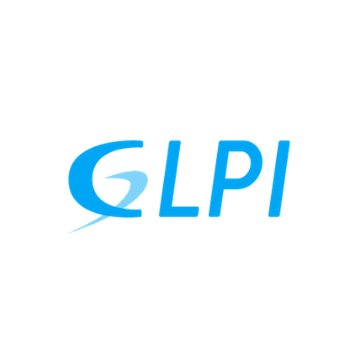
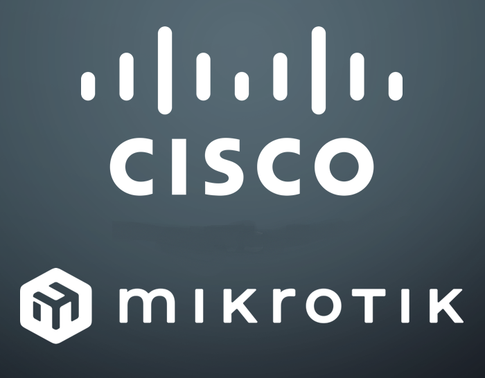

Skills

IT Ticketing & Asset Management
IT Ticketing & Asset Management

Database Admin (MySQL & PostgreSQL)

Network Engineer (Cisco & Mikrotik)
Network Engineer (Cisco & Mikrotik)

Quality Control (ERP & SIMRS)

CCTV (DVR & NVR)

IT Helpdesk Support